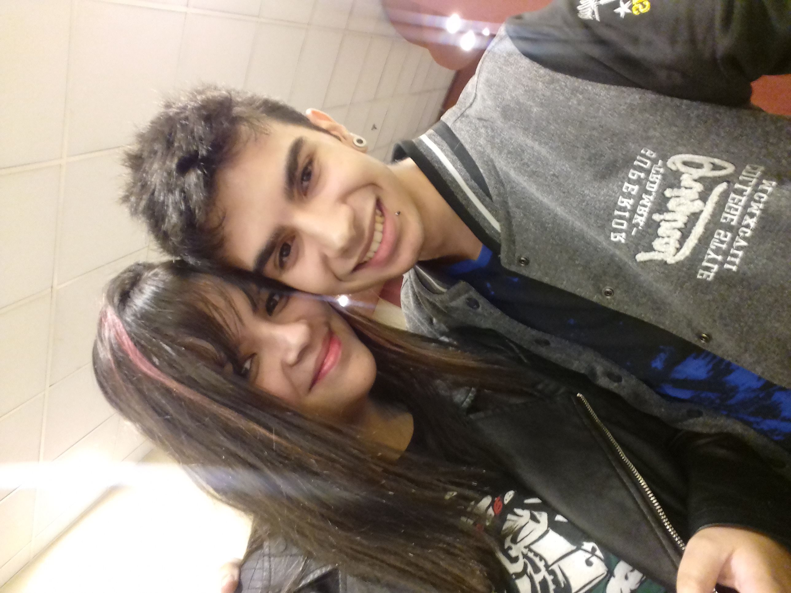
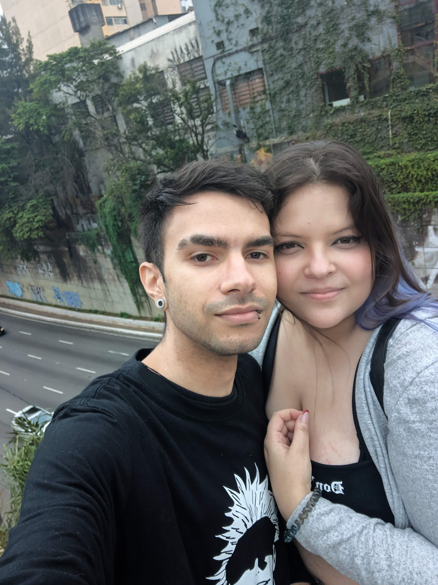
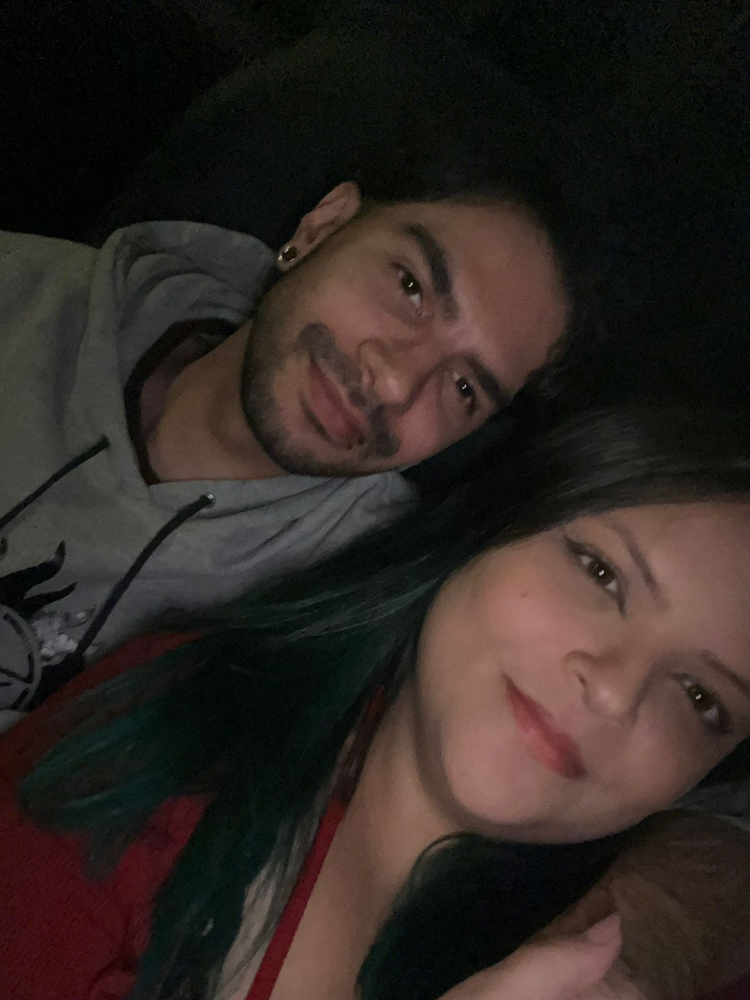

Você aceita percorrer essa história comigo?
Amanda, meu amor... tomei a liberdade de criar algo pra você, algo que você nunca esqueça, algo que fique guardado pra sempre. Eu lembro perfeitamente de 2017, como se tivesse acontecido ontem. Foram horas te esperando naquele shopping, horas que pareciam não passar nunca, e quanto mais o tempo passava, mais nervoso eu ficava, mais ansioso eu ficava, mais eu pensava em como seria aquele momento. Mas tudo mudou no segundo em que eu te vi. Foi como se o mundo tivesse parado completamente, como se o som tivesse sumido, como se só existisse você ali na minha frente. Minha mente travou, meu coração disparou, e eu simplesmente segui o que eu sentia. Eu fui até você, te abracei, e naquele abraço eu senti algo que eu nunca tinha sentido antes. Não era só carinho, não era só emoção, era algo muito maior, algo que eu não sabia explicar, mas que eu sabia que era real. E ali, naquele momento, mesmo sem entender direito o que estava acontecendo, eu tive uma certeza dentro de mim... era você.

2018 foi um ano estranho, porque ao mesmo tempo que a vida seguiu, parecia que uma parte de mim tinha ficado presa lá atrás. O tempo passou, muitas coisas aconteceram, nós mudamos, crescemos, seguimos caminhos diferentes, mas mesmo assim, nunca foi como se a gente tivesse realmente se separado. Sempre existiu algo ali, sempre teve uma conexão que não sumia, não importava o quanto o tempo passasse ou o que acontecesse ao nosso redor. Foram tantas conversas, tantas risadas, tantos momentos simples, mas que pra mim sempre tiveram um significado enorme. Saídas, ligações, jogos, momentos inesperados... e até aqueles momentos que eram só nossos. E no fundo, mesmo quando eu não falava nada, eu sempre senti que aquilo não tinha acabado. Sempre senti que a nossa história não tinha chegado ao fim. Porque quando é real, não desaparece... só espera o momento certo pra continuar..

Mesmo depois de mais de 8 anos… eu nunca cheguei exatamente aqui. Eu preciso começar dizendo o quanto eu tô feliz. Feliz de sentir isso vindo de você também… esse carinho, esse afeto… poder ficar grudado, te abraçar, te ter perto… não existe nada igual no mundo pra mim. De verdade… eu tô vivendo um sonho. E todo dia eu acordo pensando: “será que foi só um sonho?” E quando eu percebo que não foi… vem uma felicidade absurda, tudo de uma vez. Porque, antes de você… minha vida até seguia… mas era como uma noite sem lua… meio escura. E aí você apareceu… e iluminou tudo. E é estranho… porque eu nunca tive escolha nisso. Eu só… me apaixonei por você. E mesmo que pareça impossível às vezes… mesmo com tudo que já passou… eu escolheria você. Sempre você. E eu percebi uma coisa que talvez eu sempre soube, mas nunca consegui dizer de verdade: não importa o tempo que passe, não importa o que aconteça, você sempre foi, e sempre vai ser, a minha escolha. Porque você… é minha vida agora. Eu te amo, minha neném.
"Você aceita passar 'A Thousand Years' (e mais mil depois dessas) do meu lado?"
